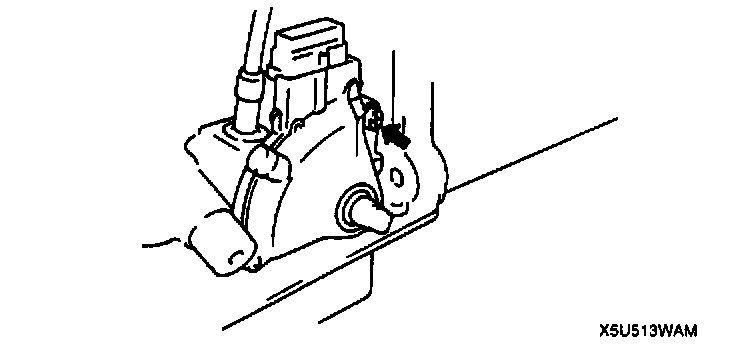
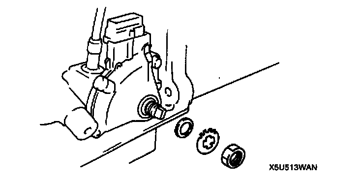

Transmission Position Sensor/Switch: Service and Repair
TRANSMISSION RANGE SWITCH REMOVAL/INSTALLATION1. Disconnect the negative battery cable.
2. Disconnect the transmission range switch connector.
3. Remove the selector rod from the manual shaft lever.
4. Remove the manual shaft lever.
5. Remove the staking of the lock washer by using a screwdriver.
6. Remove the nut, lock washer, and packing.
7. Remove the transmission range switch.
8. Rotate the manual shaft to the N position.

9. Hand-tighten the transmission range switch bolt.
10. Install the new packing.
11. Install the new lock washer.

12. Tighten the nut.
Tightening torque 3.0 - 4.9 Nm (30 - 50 kgf cm, 27 - 43 inch lbs.)
13. Bend claws of lock washer.
14. Adjust the transmission range switch.
15. Tighten the transmission range switch mounting bolt.
Tightening torque 4.0 - 6.8 Nm (40 - 70 kgf-cm, 35 - 60 inch lbs.)
16. Rotate the manual shaft to the P position.
17. Install the manual shaft lever.
18. Install the selector rod to the manual shaft lever.